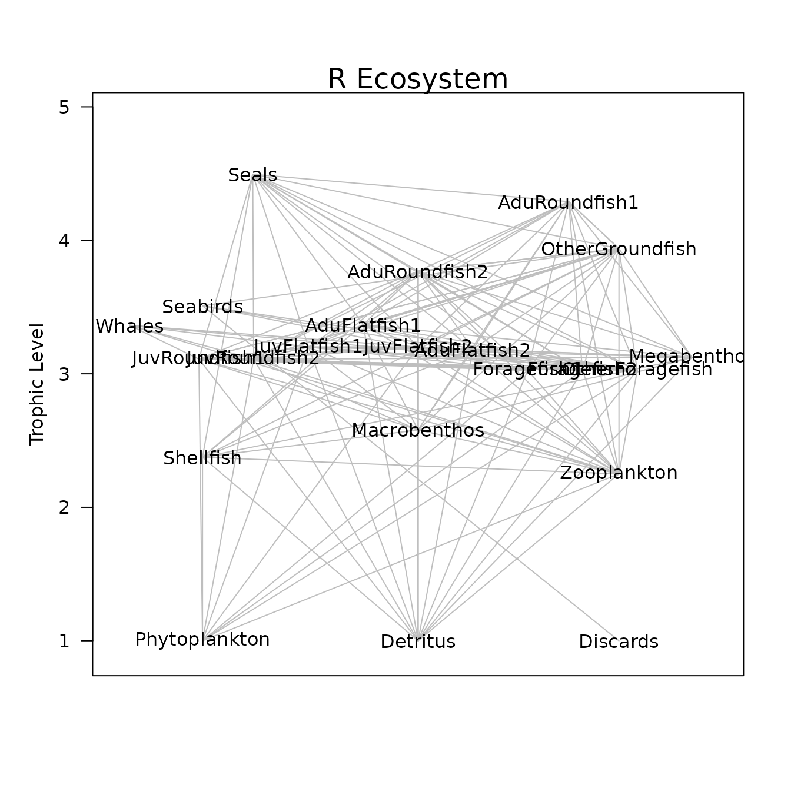
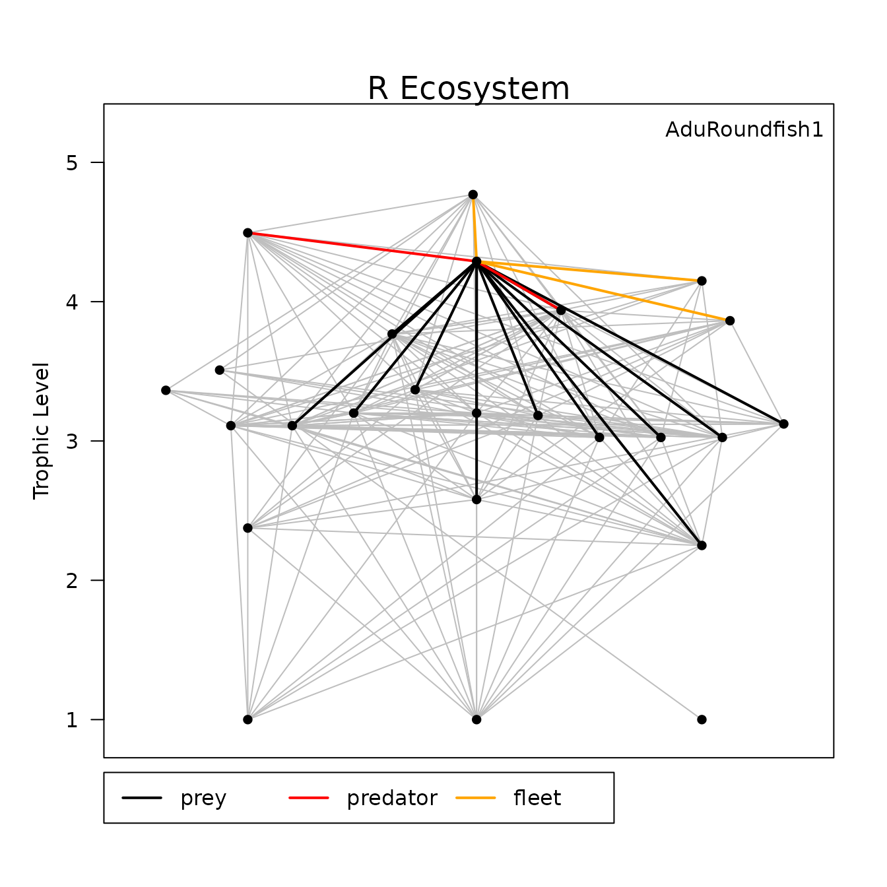

vignettes/RunRpath.Rmd
RunRpath.RmdAfter creating the parameter object, running ecopath in R is
relatively straightforward. It is just the function rpath
supplied with the parameter object. Additionally, you can supply an
ecosystem name for the output.
REco <- rpath(REco.params, eco.name = 'R Ecosystem')
REco
#> Rpath model: R Ecosystem
#> Model Area: 1
#> Status: Balanced
#> Group type TL Biomass PB QB
#> Seabirds Seabirds 0 3.509004 1.490000e-02 0.098 76.750000
#> Whales Whales 0 3.363740 4.540000e-01 0.031 6.976000
#> Seals Seals 0 4.494531 2.500000e-02 0.100 34.455000
#> JuvRoundfish1 JuvRoundfish1 0 3.109999 1.304305e-01 2.026 8.413857
#> AduRoundfish1 AduRoundfish1 0 4.289424 1.390000e+00 0.420 2.190000
#> JuvRoundfish2 JuvRoundfish2 0 3.109999 1.232608e+00 2.100 10.936279
#> AduRoundfish2 AduRoundfish2 0 3.768021 5.553000e+00 0.425 3.780000
#> JuvFlatfish1 JuvFlatfish1 0 3.200177 6.988442e-02 1.500 8.007334
#> AduFlatfish1 AduFlatfish1 0 3.367892 5.766000e+00 0.260 1.440000
#> JuvFlatfish2 JuvFlatfish2 0 3.200177 9.628877e-02 1.100 5.843517
#> AduFlatfish2 AduFlatfish2 0 3.182930 7.390000e-01 0.180 1.690000
#> OtherGroundfish OtherGroundfish 0 3.937873 7.400000e+00 0.600 1.764000
#> Foragefish1 Foragefish1 0 3.025362 5.100000e+00 0.610 3.520000
#> Foragefish2 Foragefish2 0 3.025362 4.700000e+00 0.650 5.650000
#> OtherForagefish OtherForagefish 0 3.025362 5.100000e+00 1.500 3.600000
#> Megabenthos Megabenthos 0 3.122309 1.976538e+01 0.900 2.984000
#> Shellfish Shellfish 0 2.375000 7.000000e+00 1.300 5.200000
#> Macrobenthos Macrobenthos 0 2.579687 1.740000e+01 7.000 20.000000
#> Zooplankton Zooplankton 0 2.250000 2.300000e+01 39.000 156.000000
#> Phytoplankton Phytoplankton 1 1.000000 1.000000e+01 240.000 0.000000
#> Detritus Detritus 2 1.000000 3.636667e+03 0.500 0.000000
#> Discards Discards 2 1.000000 1.218220e+00 0.500 0.000000
#> Trawlers Trawlers 3 4.768917 0.000000e+00 0.000 0.000000
#> Midwater Midwater 3 4.149361 0.000000e+00 0.000 0.000000
#> Dredgers Dredgers 3 3.863316 0.000000e+00 0.000 0.000000
#> EE GE Removals
#> Seabirds 6.848377e-03 0.001276873 1.00e-05
#> Whales 7.105301e-06 0.004443807 1.00e-07
#> Seals 8.000000e-01 0.002902336 2.00e-03
#> JuvRoundfish1 3.368028e-01 0.240793243 3.00e-03
#> AduRoundfish1 3.981550e-01 0.191780822 1.45e-01
#> JuvRoundfish2 3.555950e-02 0.192021441 3.00e-03
#> AduRoundfish2 2.512776e-01 0.112433862 3.89e-01
#> JuvFlatfish1 5.078699e-01 0.187328259 2.00e-03
#> AduFlatfish1 2.531474e-01 0.180555556 1.80e-01
#> JuvFlatfish2 5.026385e-01 0.188242784 2.00e-03
#> AduFlatfish2 8.516723e-01 0.106508876 7.00e-02
#> OtherGroundfish 9.799546e-01 0.340136054 3.80e-01
#> Foragefish1 9.894495e-01 0.173295455 3.51e-01
#> Foragefish2 9.858029e-01 0.115044248 9.10e-02
#> OtherForagefish 9.570763e-01 0.416666667 3.10e-02
#> Megabenthos 8.000000e-01 0.301608579 1.90e-01
#> Shellfish 6.797570e-01 0.250000000 5.10e-01
#> Macrobenthos 9.865641e-01 0.350000000 1.00e-04
#> Zooplankton 9.664749e-01 0.250000000 0.00e+00
#> Phytoplankton 9.068092e-01 0.000000000 0.00e+00
#> Detritus 5.282553e-01 0.000000000 0.00e+00
#> Discards 5.632356e-01 0.000000000 0.00e+00
#> Trawlers 0.000000e+00 0.000000000 0.00e+00
#> Midwater 0.000000e+00 0.000000000 0.00e+00
#> Dredgers 0.000000e+00 0.000000000 0.00e+00The output object from rpath is an S3 object type called
‘Rpath’. Rpath objects are a list of parameters from the mass balance.
However, the print function will display the same
information as the “Basic Estimates” tab from EwE. You will also notice
that the print function will display whether the model is
balanced or not. If the model was not balanced, it would list the groups
that are not balanced.
You can also display the mortalities associated with each group by
supplying the argument morts = T to the print
function.
print(REco, morts = T)
#> Rpath model: R Ecosystem
#> Model Area: 1
#> Status: Balanced
#> Group type PB M0 F.Trawlers
#> Seabirds Seabirds 0 0.098 0.097328859 6.711409e-04
#> Whales Whales 0 0.031 0.030999780 2.202643e-07
#> Seals Seals 0 0.100 0.020000000 4.000000e-02
#> JuvRoundfish1 JuvRoundfish1 0 2.026 1.343637542 7.666919e-03
#> AduRoundfish1 AduRoundfish1 0 0.420 0.252774921 6.115108e-02
#> JuvRoundfish2 JuvRoundfish2 0 2.100 2.025325048 8.112877e-04
#> AduRoundfish2 AduRoundfish2 0 0.425 0.318207030 5.924725e-02
#> JuvFlatfish1 JuvFlatfish1 0 1.500 0.738195163 1.430934e-02
#> AduFlatfish1 AduFlatfish1 0 0.260 0.194181677 2.254596e-02
#> JuvFlatfish2 JuvFlatfish2 0 1.100 0.547097656 1.038543e-02
#> AduFlatfish2 AduFlatfish2 0 0.180 0.026698988 8.119080e-02
#> OtherGroundfish OtherGroundfish 0 0.600 0.012027247 3.783784e-02
#> Foragefish1 Foragefish1 0 0.610 0.006435784 1.960784e-04
#> Foragefish2 Foragefish2 0 0.650 0.009228113 2.127660e-04
#> OtherForagefish OtherForagefish 0 1.500 0.064385523 1.960784e-04
#> Megabenthos Megabenthos 0 0.900 0.180000000 0.000000e+00
#> Shellfish Shellfish 0 1.300 0.416315964 0.000000e+00
#> Macrobenthos Macrobenthos 0 7.000 0.094051032 0.000000e+00
#> Zooplankton Zooplankton 0 39.000 1.307480577 0.000000e+00
#> Phytoplankton Phytoplankton 1 240.000 22.365799754 0.000000e+00
#> Detritus Detritus 2 0.500 0.528255254 0.000000e+00
#> Discards Discards 2 0.500 0.563235612 0.000000e+00
#> F.Midwater F.Dredgers M2.Seabirds M2.Whales M2.Seals
#> Seabirds 0.0000000000 0.000000e+00 0.00000000 0.00000000 0.000000000
#> Whales 0.0000000000 0.000000e+00 0.00000000 0.00000000 0.000000000
#> Seals 0.0400000000 0.000000e+00 0.00000000 0.00000000 0.000000000
#> JuvRoundfish1 0.0076669193 7.666919e-03 0.00000000 0.24281931 0.330204629
#> AduRoundfish1 0.0071942446 3.597122e-02 0.00000000 0.00000000 0.061969424
#> JuvRoundfish2 0.0008112877 8.112877e-04 0.00000000 0.02569433 0.034941149
#> AduRoundfish2 0.0018008284 9.004142e-03 0.00000000 0.00000000 0.031023771
#> JuvFlatfish1 0.0000000000 1.430934e-02 0.00000000 0.45319174 0.061628546
#> AduFlatfish1 0.0000000000 8.671523e-03 0.00000000 0.00000000 0.007469433
#> JuvFlatfish2 0.0000000000 1.038543e-02 0.00000000 0.32891728 0.044728736
#> AduFlatfish2 0.0000000000 1.353180e-02 0.00000000 0.00000000 0.011655954
#> OtherGroundfish 0.0067567568 6.756757e-03 0.01545372 0.00000000 0.027936486
#> Foragefish1 0.0686274510 0.000000e+00 0.05605760 0.00000000 0.008444853
#> Foragefish2 0.0191489362 0.000000e+00 0.04866277 0.00000000 0.009163564
#> OtherForagefish 0.0058823529 0.000000e+00 0.03363456 0.06210008 0.008444853
#> Megabenthos 0.0000000000 9.612765e-03 0.00000000 0.00000000 0.002178999
#> Shellfish 0.0000000000 7.285714e-02 0.00000000 0.00000000 0.011074821
#> Macrobenthos 0.0000000000 5.747126e-06 0.00000000 0.00000000 0.000000000
#> Zooplankton 0.0000000000 0.000000e+00 0.00000000 0.11842215 0.000000000
#> Phytoplankton 0.0000000000 0.000000e+00 0.00000000 0.00000000 0.000000000
#> Detritus 0.0000000000 0.000000e+00 0.00000000 0.00000000 0.000000000
#> Discards 0.0000000000 0.000000e+00 0.34307250 0.00000000 0.000000000
#> M2.JuvRoundfish1 M2.AduRoundfish1 M2.JuvRoundfish2
#> Seabirds 0.000000e+00 0.000000000 0.000000e+00
#> Whales 0.000000e+00 0.000000000 0.000000e+00
#> Seals 0.000000e+00 0.000000000 0.000000e+00
#> JuvRoundfish1 8.413857e-04 0.000000000 1.033512e-02
#> AduRoundfish1 0.000000e+00 0.000000000 0.000000e+00
#> JuvRoundfish2 8.903262e-05 0.002469641 1.093628e-03
#> AduRoundfish2 0.000000e+00 0.005481902 0.000000e+00
#> JuvFlatfish1 1.570341e-03 0.043559067 1.928920e-02
#> AduFlatfish1 0.000000e+00 0.026396982 0.000000e+00
#> JuvFlatfish2 1.139721e-03 0.031614279 1.399971e-02
#> AduFlatfish2 0.000000e+00 0.041192152 0.000000e+00
#> OtherGroundfish 1.483005e-04 0.119295811 1.821642e-03
#> Foragefish1 0.000000e+00 0.059688235 0.000000e+00
#> Foragefish2 0.000000e+00 0.064768085 0.000000e+00
#> OtherForagefish 1.075905e-02 0.207118176 1.321583e-01
#> Megabenthos 5.552250e-06 0.004620350 6.820079e-05
#> Shellfish 0.000000e+00 0.000000000 0.000000e+00
#> Macrobenthos 1.261406e-03 0.008747414 1.549442e-02
#> Zooplankton 3.714540e-02 0.001323522 4.562737e-01
#> Phytoplankton 1.097423e-02 0.000000000 1.348015e-01
#> Detritus 5.487117e-02 0.000000000 6.740074e-01
#> Discards 0.000000e+00 0.000000000 0.000000e+00
#> M2.AduRoundfish2 M2.JuvFlatfish1 M2.AduFlatfish1
#> Seabirds 0.0000000000 0.000000e+00 0.0000000000
#> Whales 0.0000000000 0.000000e+00 0.0000000000
#> Seals 0.0000000000 0.000000e+00 0.0000000000
#> JuvRoundfish1 0.0160931242 4.290315e-04 0.0000000000
#> AduRoundfish1 0.0000000000 0.000000e+00 0.0000000000
#> JuvRoundfish2 0.0017029205 4.539868e-05 0.0000000000
#> AduRoundfish2 0.0000000000 0.000000e+00 0.0000000000
#> JuvFlatfish1 0.0300357949 8.007334e-04 0.0118811037
#> AduFlatfish1 0.0003640364 0.000000e+00 0.0001440000
#> JuvFlatfish2 0.0217993646 5.811559e-04 0.0086230617
#> AduFlatfish2 0.0028403708 0.000000e+00 0.0011235507
#> OtherGroundfish 0.2836532432 0.000000e+00 0.0001122032
#> Foragefish1 0.2057876471 0.000000e+00 0.0000000000
#> Foragefish2 0.2233014894 0.000000e+00 0.0000000000
#> OtherForagefish 0.2057876471 1.097231e-05 0.0016280471
#> Megabenthos 0.2850340406 2.831151e-06 0.0210039937
#> Shellfish 0.0299862000 0.000000e+00 0.0011861486
#> Macrobenthos 0.4463463103 1.337865e-02 0.2863117241
#> Zooplankton 0.0009126235 1.054458e-02 0.0893479304
#> Phytoplankton 0.0000000000 5.595879e-03 0.0000000000
#> Detritus 2.0990340000 2.797939e-02 0.8303040000
#> Discards 0.0000000000 0.000000e+00 0.0000000000
#> M2.JuvFlatfish2 M2.AduFlatfish2 M2.OtherGroundfish
#> Seabirds 0.000000e+00 0.000000e+00 0.0000000000
#> Whales 0.000000e+00 0.000000e+00 0.0000000000
#> Seals 0.000000e+00 0.000000e+00 0.0000000000
#> JuvRoundfish1 4.313908e-04 0.000000e+00 0.0100080897
#> AduRoundfish1 0.000000e+00 0.000000e+00 0.0009391079
#> JuvRoundfish2 4.564833e-05 0.000000e+00 0.0010590226
#> AduRoundfish2 0.000000e+00 0.000000e+00 0.0002350729
#> JuvFlatfish1 8.051367e-04 1.787108e-03 0.0186788424
#> AduFlatfish1 0.000000e+00 0.000000e+00 0.0002263892
#> JuvFlatfish2 5.843517e-04 1.297046e-03 0.0135567211
#> AduFlatfish2 0.000000e+00 0.000000e+00 0.0017663870
#> OtherGroundfish 0.000000e+00 0.000000e+00 0.0882000000
#> Foragefish1 0.000000e+00 0.000000e+00 0.2047623529
#> Foragefish2 0.000000e+00 0.000000e+00 0.2755142809
#> OtherForagefish 1.103265e-05 2.448843e-05 0.7678588235
#> Megabenthos 2.846720e-06 6.318673e-06 0.0990641013
#> Shellfish 0.000000e+00 1.784157e-05 0.0186480000
#> Macrobenthos 1.345222e-02 3.158163e-02 0.2250620690
#> Zooplankton 1.060257e-02 2.115002e-02 0.0056754783
#> Phytoplankton 5.626651e-03 0.000000e+00 0.0000000000
#> Detritus 2.813326e-02 2.123147e-01 0.0000000000
#> Discards 0.000000e+00 0.000000e+00 0.0000000000
#> M2.Foragefish1 M2.Foragefish2 M2.OtherForagefish M2.Megabenthos
#> Seabirds 0.000000000 0.000000000 0.000000000 0.000000
#> Whales 0.000000000 0.000000000 0.000000000 0.000000
#> Seals 0.000000000 0.000000000 0.000000000 0.000000
#> JuvRoundfish1 0.013763653 0.020359504 0.014076464 0.000000
#> AduRoundfish1 0.000000000 0.000000000 0.000000000 0.000000
#> JuvRoundfish2 0.001456424 0.002154375 0.001489524 0.000000
#> AduRoundfish2 0.000000000 0.000000000 0.000000000 0.000000
#> JuvFlatfish1 0.025688130 0.037998457 0.026271952 0.000000
#> AduFlatfish1 0.000000000 0.000000000 0.000000000 0.000000
#> JuvFlatfish2 0.018643919 0.027578502 0.019067644 0.000000
#> AduFlatfish2 0.000000000 0.000000000 0.000000000 0.000000
#> OtherGroundfish 0.000000000 0.000000000 0.000000000 0.000000
#> Foragefish1 0.000000000 0.000000000 0.000000000 0.000000
#> Foragefish2 0.000000000 0.000000000 0.000000000 0.000000
#> OtherForagefish 0.000000000 0.000000000 0.000000000 0.000000
#> Megabenthos 0.000000000 0.000000000 0.000000000 0.298400
#> Shellfish 0.000000000 0.000000000 0.000000000 0.252771
#> Macrobenthos 0.000000000 0.000000000 0.000000000 1.864307
#> Zooplankton 0.639715617 0.946281652 0.654254609 0.000000
#> Phytoplankton 0.107712000 0.159330000 0.110160000 0.000000
#> Detritus 2.154240000 3.186600000 2.203200000 18.873570
#> Discards 0.000000000 0.000000000 0.000000000 0.000000
#> M2.Shellfish M2.Macrobenthos M2.Zooplankton M2.Phytoplankton
#> Seabirds 0.0000000 0.0000000 0.00 0
#> Whales 0.0000000 0.0000000 0.00 0
#> Seals 0.0000000 0.0000000 0.00 0
#> JuvRoundfish1 0.0000000 0.0000000 0.00 0
#> AduRoundfish1 0.0000000 0.0000000 0.00 0
#> JuvRoundfish2 0.0000000 0.0000000 0.00 0
#> AduRoundfish2 0.0000000 0.0000000 0.00 0
#> JuvFlatfish1 0.0000000 0.0000000 0.00 0
#> AduFlatfish1 0.0000000 0.0000000 0.00 0
#> JuvFlatfish2 0.0000000 0.0000000 0.00 0
#> AduFlatfish2 0.0000000 0.0000000 0.00 0
#> OtherGroundfish 0.0000000 0.0000000 0.00 0
#> Foragefish1 0.0000000 0.0000000 0.00 0
#> Foragefish2 0.0000000 0.0000000 0.00 0
#> OtherForagefish 0.0000000 0.0000000 0.00 0
#> Megabenthos 0.0000000 0.0000000 0.00 0
#> Shellfish 0.0000000 0.4971429 0.00 0
#> Macrobenthos 0.0000000 4.0000000 0.00 0
#> Zooplankton 0.4747826 3.0260870 31.20 0
#> Phytoplankton 1.8200000 0.0000000 215.28 0
#> Detritus 7.2800000 205.3200000 717.60 0
#> Discards 0.0000000 0.0000000 0.00 0Note that if you wish to save the print output you need
to use the function write.rpath. This function will also
accept the argument ‘morts = T’.
The generic function summary will display some summary
statistics on the model as well as a list of attributes you can access.
To access any of the other attributes simply use the standard list
notation.
summary(REco)
#> Rpath model: R Ecosystem
#> Status: Balanced
#>
#> Summary Statistics:
#> NumGroups NumLiving NumDetritus NumFleets TotBiomass TotLandings
#> 1 25 20 2 3 104.9365 1.74
#>
#> Rpath model also includes:
#> [1] "NUM_GROUPS" "NUM_LIVING" "NUM_DEAD" "NUM_GEARS" "Group"
#> [6] "type" "TL" "Biomass" "PB" "QB"
#> [11] "EE" "BA" "Unassim" "GE" "DC"
#> [16] "DetFate" "Landings" "Discards"
REco$TL
#> Seabirds Whales Seals JuvRoundfish1 AduRoundfish1
#> 3.509004 3.363740 4.494531 3.109999 4.289424
#> JuvRoundfish2 AduRoundfish2 JuvFlatfish1 AduFlatfish1 JuvFlatfish2
#> 3.109999 3.768021 3.200177 3.367892 3.200177
#> AduFlatfish2 OtherGroundfish Foragefish1 Foragefish2 OtherForagefish
#> 3.182930 3.937873 3.025362 3.025362 3.025362
#> Megabenthos Shellfish Macrobenthos Zooplankton Phytoplankton
#> 3.122309 2.375000 2.579687 2.250000 1.000000
#> Detritus Discards Trawlers Midwater Dredgers
#> 1.000000 1.000000 4.768917 4.149361 3.863316One of the advantages of R is its graphical ability. Users can feel free to develop their own graphical routines for the Rpath outputs. However, we have included a basic food web plot. The routine can include fisheries, display group numbers or names, and even highlight a particular group.
webplot(REco)
webplot(REco, labels = T)
webplot(REco, fleets = T, highlight = 'AduRoundfish1')